Rush Posters & Banners - Full Listing
Hemispheres posters
|
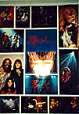
"large collage"
42" x 54"
Large poster with white background containing numerous shots (all but one in
concert) of the band. All were taken circa Hemispheres, and "Rush" is
written in the Hemispheres script in the middle of the poster.
|

"3 circles"
35" x 22"
Concert shot circa Hemispheres, with three circles, one of each band member,
superimposed over. "Rush" is written in the Hemispheres script along the
bottom.
|

"album cover"
25" x 35"
Close-up of Hemispheres cover. This is a UK
poster printed on heavy paper; the image is made up of small dots.
|

"smoke bombs"
30" x 20"
Concert shot of the band surrounded in white smoke. "Rush" is written at the
top in Hemispheres script, with "Tour of the Hemispheres" written below.
|
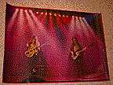
"red concert shot"
33" x 24"
Red/purple concert shot of Geddy and Alex, with a red border. Made in
England.
|
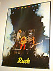
"smoke bombs - tall"
27" x 38"
Tall concert shot of the band surrounded in white smoke. "Rush" is written at
the bottom in yellow letters. Made in Switzerland.
|
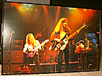
"geddy & alex in multi-color"
38" x 25"
Close-up of stage shot w/Geddy & Alex in multi-colored lights. Made in
Scotland.
|
Permanent Waves posters
|

"album promo"
24" x 28" (??)
Album cover on a black background with "permanent waves now available" written
underneath in red script. The newspaper headline is blacked out.
|

"concert/portrait split"
24" x 36"
From Scotland (1980), upper half is studio picture of the band, lower half
is a concert shot circa Permanent Waves.
|

"album cover"
38" x 25"
Close-up shot of the Permanent Waves cover with a white border. "permanent
waves" is written in gold. The newspaper headline is blocked out in white.
|
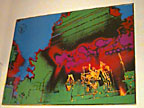
"psychedelic concert"
39" x 26"
Poster from the UK with no date or manufacturer. Permanent Waves era
judging by the picture. Small concert shot of the band in the lower right,
covered by a psychedelic-colored picture, perhaps the outline of a country?
A black man w/star is in the upper left corner.
|

"ft. wayne tour date"
17" x 22.5"
Tour poster for Ft. Wayne Coliseum in Indiana on April 28, 1980. Blue
posterboard with Rush in red, the man w/star below it in purple, and the
date/venue below in white print. White EKG's are in the background.
|
Moving Pictures/Exit Stage Left posters
|
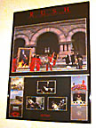
"moving pictures promo"
24" x 36"
Top 2/3 is Moving Pictures album cover, bottom 1/3 has smaller album covers of
Archives, 2112, All The World's A Stage, Hemispheres, A Farewell to Kings and
Permanent Waves on the sides, with three black & white shots of the band in
the middle.
|
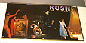
"esl album cover"
33" x 19"
Front and back covers of "Exit... Stage Left".
|
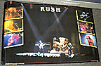
"esl concert w/6 smaller pics"
34" x 22"
Background is a concert shot, with six smaller shots on the sides over the
picture. RUSH is written at the top in the font used on Exit... Stage Left.
|
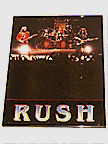
"esl small concert"
17" x 22"
Concert shot of the band, with "Rush" written below in ESL font. Sold at
Dairy Queen.
|
Signals posters
|

"album promo"
24" x 36"
Top 2/3 is Signals album cover, bottom 1/3 has smaller covers of Exit...
Stage Left, Moving Pictures and Permanent Waves on a red background, with
"also available" written underneath.
|
"digitized pictures"
36" x 24"
Light green background with the "digitized" pictures of the band from the
Signals album in the center, "Anthem" written at the bottom.
|

"large album cover"
37" x 56"
Close-up of the dog and hydrant from the Signals album cover, surrounded by a
light green background. Rush is written at the top in Signals script, and
"Signals" at the bottom in black block letters. Surrounded by a white border.
|
"euro tour '83"
24" x 34"
Top half is from A Farewell To Kings, bottom half is from Moving Pictures. The
man w/star is in the center with "Rush" written in Hemispheres script, and
"European Tour '83" in blue block letters at the top.
|

"tour dates w/nazareth"
46.5" x 33"
Black tour poster for German dates. Rush is written at the top in red
Hemispheres script, the dates along the right side in white, and the man
w/star. "Special Guests Nazareth" is along the bottom.
|
Grace Under Pressure posters
|

"album cover"
24" x 36"
Close-up picture of the Grace Under Pressure album cover. There are two
versions of this poster -- the US version is printed on normal poster stock,
while the UK version is on thicker paper, has a white border, and the picture
consists of small dots
|
 "band portrait"
"band portrait"
32" x 22"
Color portrait of the band taken from the Grace Under Pressure album.
|
 "three-image concert shot"
"three-image concert shot"
24" x 34"
Background split into black, red and blue sections with three concert shots
(one of each member) overlaid. "RUSH" is written at the top in white.
|
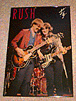
"alex & geddy close-up"
24" x 36"
Close-up concert shot of Geddy and Alex. RUSH is in the top left in pink, and
"p/g" in the upper right corner in white.
|
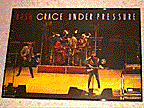
"full-band concert shot"
29" x 20"
Concert shot of the band. RUSH is in the top left in red, "Grace Under
Pressure" across the top in white.
|
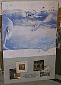
"album promo"
24" x 36"
Grace Under Pressure album cover over top 2/3, bottom 1/3 has smaller pictures
of Signals, Moving Pictures, Permanent Waves and Exit... Stage Left with "also
available" written underneath.
|
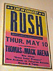
"thomas & mack tour date"
20" x 24"
Poster for Thomas & Mack Arena (Las Vegas), May 10, 1984. Yellow top fading
to pink with blue writing, with "Live in Concert" at the top, the date and
venue at the bottom.
|
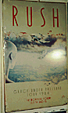
"montreal tour dates"
12" x 20"
Poster for the Montreal Forum, July 14 & 15, 1984. White background with Grace
Under Pressure album cover, RUSH written across the top in red lettering, the
date and venue at the bottom.
|
Power Windows/Through the Camera Eye posters
|
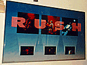
"6-picture spotlight"
36" x 24"
Blue background fading to white at the bottom, with RUSH written in the font
from Power Windows. Three small pictures of the band are at the bottom, with
"spotlights" extending up to three larger pictures, one of each member. All
pictures are concert shots.
|

"power windows album promo"
24" x 36"
Power Windows album cover over top 2/3, bottom 1/3 has small pictures of
Moving Pictures, Exit... Stage Left, Signals and Grace Under Pressure with
"also available" written underneath.
|
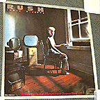
"square power windows promo"
24" x 24"
Power Windows album cover, with "On Mercury Records, Cassettes & Compact
Discs" written in pink script at the bottom.
|
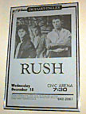
"pittsburgh tour date"
23" x 35"
Tour poster for the Pittsburgh Civic Arena, December 18th 1985. Light blue
background with promo shot of the band at the top, with date and venue listed
in black at the bottom.
|
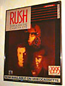
"through the camera eye video promo"
18" x 24"
Promo for the videocassette "Through The Camera Eye". Has the "digitized"
pictures of the band members from Signals, with "Now Available On
Videocassette" at the bottom in blue print.
|
Hold Your Fire posters
|

"square hyf album promo"
24" x 24"
Album cover of Hold Your Fire, with small white square saying "Featuring
Force 10, Time Stand Still".
|
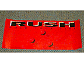
"tiny hyf album promo"
20" x 9"
Close-up of the Hold Your Fire album cover, with "Now Available on Compact
Discs, Chrome Cassettes and Albums" written in small black print in the
corner.
|
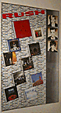
"album brick wall"
24" x 36"
Brick wall with album covers 2112 through Hold Your Fire (minus A Farewell To
Kings), with band pictures from the album down the side.
|

"gray concert shot"
24" x 36"
Gray background with three concert shots, one of each band member.
|

"red concert shot"
24" x 36"
Red background with three concert shots, one of each band member.
|

"the juggler in color"
25" x 35"
Close-up of the juggler from inside HYF. "Rush" is written at the top in red,
and "Hold Your Fire" at the bottom in white.
|

"uk tour dates"
24" x 35"
Hold Your Fire tour poster for several UK dates in April 1988. Background is
white with a red border. "Rush in Concert" is at the top, and the juggler is
in the middle of the poster in black/white, juggling three flaming red balls.
The dates and venues are listed in black at the bottom.
|

"world tour '88"
24" x 34"
Cover of HYF with three portrait shots of the band at the bottom. "World Tour
'88" is written in the top in black. This is a UK
poster printed on heavy paper; the image is made up of small dots.
|
A Show of Hands posters
|
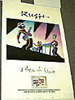
"album/video promo"
24" x 36"
White background with cover of A Show of Hands, with "Also Available" written
underneath with picture of the laserdisc and videotape.
|
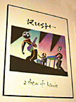
"album promo"
24" x 30.5"
White background with cover of A Show of Hands.
|
Presto/Chronicles posters
|

"album promo"
24" x 36"
Top 2/3 has Presto album cover, bottom has "Rush Presto" written with picture
of the rabbit in the hat on a white background.
|

"tour poster"
36" x 24"
Sold only during the Presto tour. Background is white, with "Rush Presto
Poster" written at the top center, surrounded by eight concert shots of the
band.
|

"square chronicles album cover"
24" x 24"
Chronicles album cover.
|
Roll the Bones posters
|

"square album cover"
24" x 24"
Roll The Bones album cover.
|

"black concert shot"
34" x 22"
Large picture of Rush playing in concert, with seven smaller concert shots
overlaid the large one. All pictures are taken from the Roll The Bones tour
book.
|

"album cover"
24" x 34"
Close-up of the boy on the cover of Roll The Bones kicking a skull. The three
"flying" bones from inside the booklet are off to the left. This is a UK
poster printed on heavy paper; the image is made up of small dots.
|
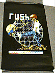
"skeleton kid"
22" x 34"
Black background with kid kicking skull, with the kid turned into a skeleton
and the skull wearing sunglasses.
|
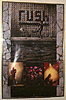
"tour poster"
24" x 36"
Poster only sold during the Roll The Bones tour. Has elongated album cover in
the middle, with a concert shot of each band member at the bottom.
|

"generic tour poster w/mr big"
15.5" x 36"
"Generic" tour poster for Roll The Bones. Promo shot of the band at the top,
bottom section has promo shot of Mr. Big, with area left blank to write in
date and venue.
|
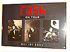
"gray tour poster
30" x 20"
Dark gray poster with three tour pictures of the band members in black &
white. Rush is written in the top center in red, "on tour" written below it in
white, with "roll the bones" at the botton in white.
|

"sheffield arena tour date"
40" x 60"
Large tour poster for Sheffield Arena. Band portrait on top in brown, "RUSH"
and "Roll The Bones Tour" below in yellow. Below is the date, venue and ticket
information.
|
Counterparts/Juno Awards posters
|
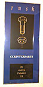
"album promo in stores"
16" x 36"
Blue background with nut & bolt in center. "Rush" is at the top in gold print,
"Counterparts" in the center in white, and "In Stores October 19th" written in
gold at the bottom.
|

"album promo with cows"
20" x 30"
Blue background w/ nut & bolt in the center, "lock stock barrel" picture
at the bottom, with COUNTERPARTS written across the bottom in red.
|

"juno awards"
18" x 24"
Poster commemorating Rush's induction into the Juno Hall of Fame. Has band
portrait with Counterparts cover over a blue/yellow background. Smaller album
covers of Chronicles, Roll The Bones, Presto and Moving Pictures are at the
bottom. "Juno Hall of Fame 1994" is at the top.
|
Test For Echo posters
|
"tour poster"
24" x 36"
Test For Echo poster sold only at concerts. Has a sky-blue background with
15 color shots in concert taken during the Counterparts tour. The stone man
is featured in the bottom left corner. Has "Rush" at the top in red/black TFE
font, "Test For Echo" at the bottom.
|

"blue album promo"
36" x 18"
Landscape of the entire Test For Echo album cover (front and back). "In Stores
September 10, 1996" is written at the bottom in black block letters.
|

"sunset album promo"
36" x 18"
Landscape of the entire Test For Echo album cover (front and back) in
"sunset" colors (browns and oranges) -- the same image on the TFE tourbook.
|
Neil endorsement posters
|

"zildjian power windows"
22" x 17"
Shot of Neil playing drums circa Power Windows. Has five smaller shots of Neil
across the top, and his drum layout in the bottom right.
|

"zildjian test for echo"
27" x 18"
Shot of Neil playing in concert circa Test For Echo. Has a stick-image
set-up of his cymbal layout, and a letter entitled "Talking Cymbals".
|
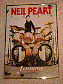
"ludwig hold your fire"
17" x 22"
Neil leaning on his drumset circa Hold Your Fire for Ludwig drums.
|
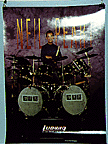
"ludwig presto"
18" x 24"
Shot of Neil behind his drumset circa Presto, for Ludwig drums.
|

"ludwig counterparts"
22" x 24"
Shot of Neil behind his drumset circa Counterparts, for Ludwig drums.
|
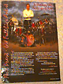
"dw test for echo"
15.5" x 21.5"
Shot of Neil standing behind his drumset circa Test For Echo,
for DW drums.
|
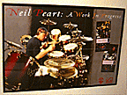
"a work in progress video"
23" x 14"
Poster done exclusively for Neil's two-tape set entitled "A Work In Progress".
Has a live shot of Neil playing on the left half, pictures of the two video
covers on the right.
|
Alex endorsement posters
|

"gallien-krueger standing"
17" x 25.5"
Shot of Alex standing with Gallien-Krueger amps, circa Hold Your Fire
|
Banners
|

"lightning bolts & star"
36" x 54"
Black banner with blue "Rush" written like on Hemispheres, with forks shooting
down like lightning. Blue man w/star is in the bottom right. NOTE: may not be
an official banner!
|

"man & star on black"
44" x 44"
Square black banner with white man & star, "Rush" written between them in
AFTK outline font.
|

"man & blue star on white"
44" x 44"
Square white banner of man and star. Star inside is dark blue, with outside
light blue, "Rush" is written between the two in red AFTK font.
|

"man & blue star on olive green"
21" x 21"
Square olive green banner of man and star. Star inside is blue, with
"Rush" written in red AFTK font and a white border.
|
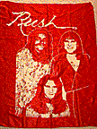
"white band portrait on red"
39" x 54"
Red banner with portrait of the band from Hemispheres era in white outline.
"Rush" is written above in white Hemispheres script.
|
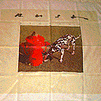
"signals album cover"
44.5" x 47"
Banner of the cover of Signals, with a white border.
|

"neil tama promo"
35" x 71"
This banner was given away when someone bought a Tama drum set back in 1983,
and is very rare. It's approximately door size, and has a picture of Neil
behind his drums, floating on a raft in the middle of a lake.
|

"grace under pressure video"
44" x 44"
White banner with color picture of a scene from "The Enemy Within" video.
"Rush" is written above in red script, with the "p/g" symbol below the
picture.
|

"hold your fire cover"
21" x 21"
Small banner of Hold Your Fire album cover, with "Rush" written around the
edges in HYF font. Sold only during the HYF tour at the concert.
|

"hold your fire european tour"
5" x 39"
Black banner with RUSH and European Tour written in yellow.
Print is on front and back of banner.
|
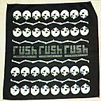
"skulls & bones"
14" x 14"
Small black banner with skulls and bones around the edges, "Rush" in the
middle. Sold only at Roll The Bones concerts.
|

"neil zildjian promo"
52" x 34"
Large vinyl banner of the Test For Echo Zildjian promo poster. "Neil Peart"
is across the top in yellow, "plays" is down the right side in yellow, and
"Zildjian cymbals" in the bottom right. There is no "Talking Cymbals" letter on
the banner.
|